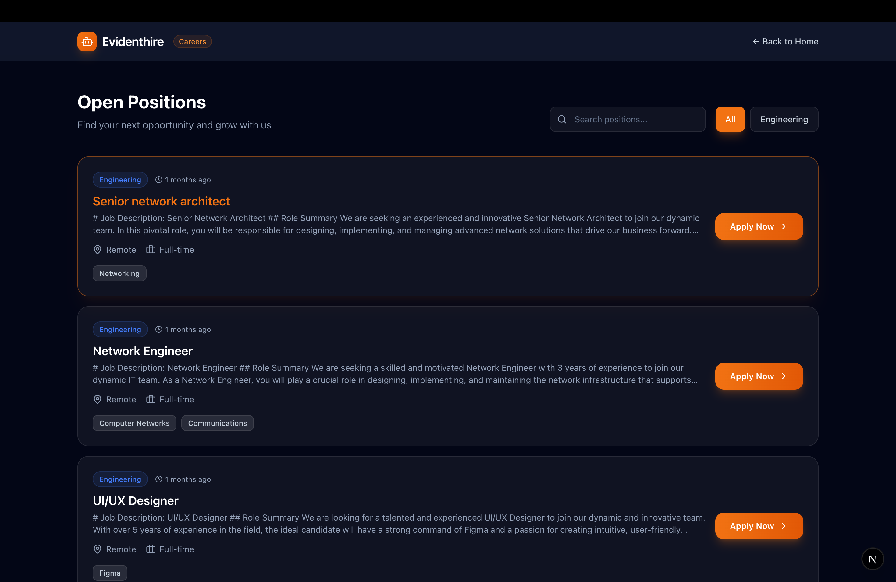
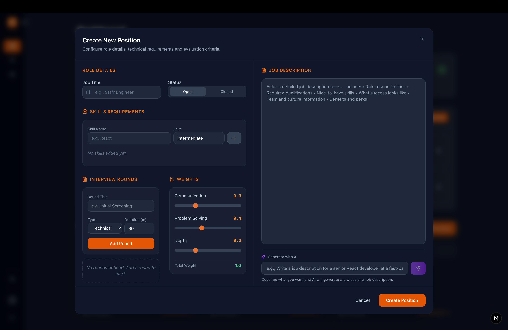
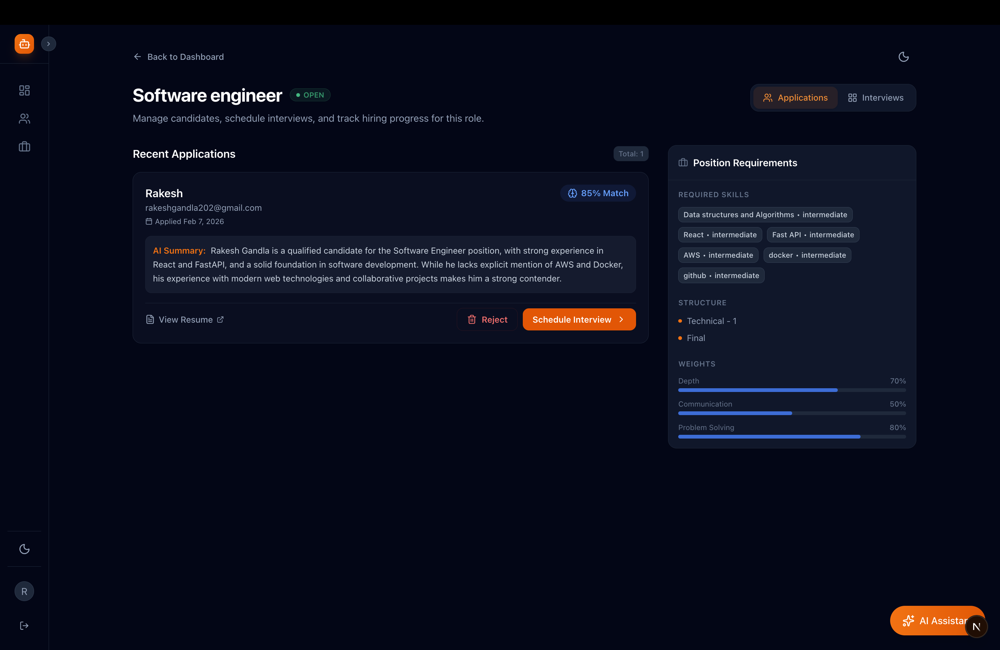
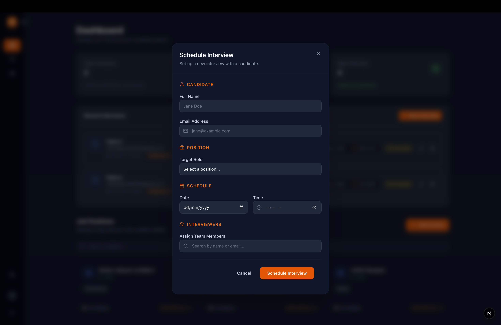
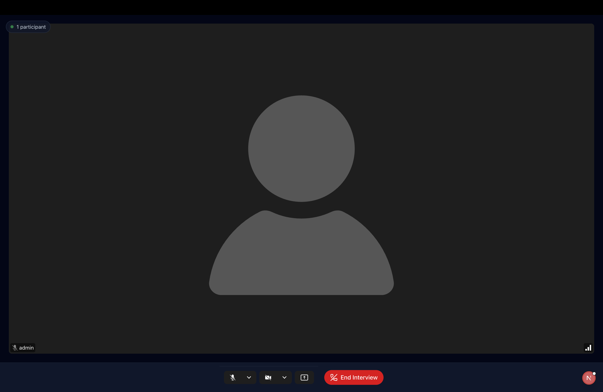
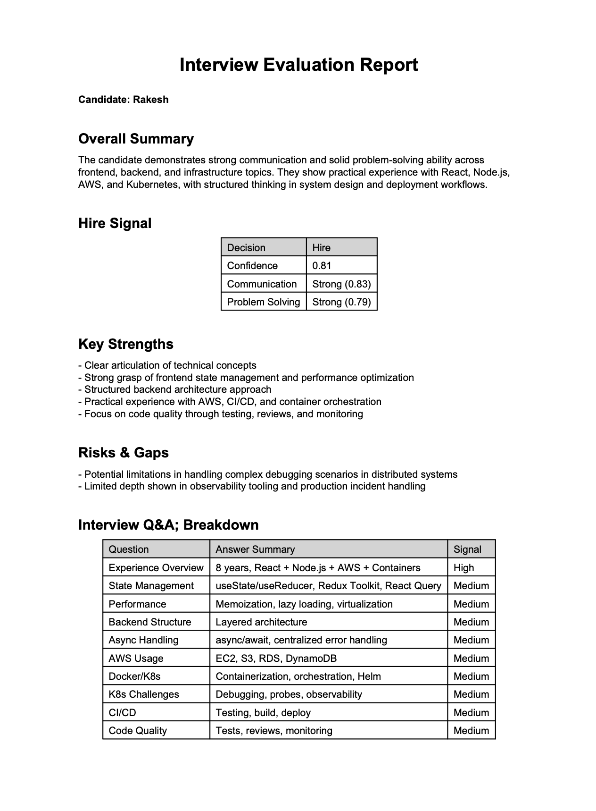
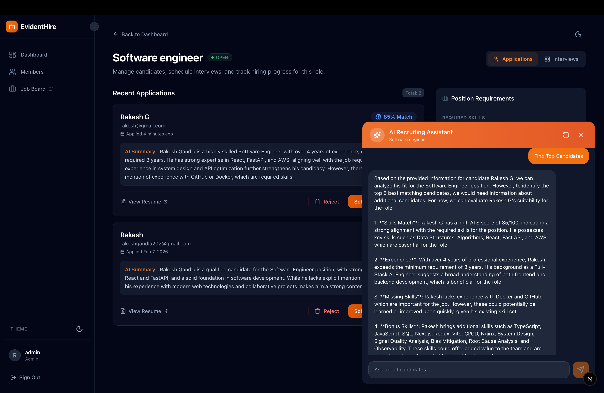

Building EvidentHire: Evidence-Based Hiring, Not Gut Feeling
Most interviews rely too much on memory and gut feeling. I built EvidentHire to shift that—analyzing interview conversations against job requirements and producing clear, evidence-backed insights instead of just opinions.
I recently read about a failed interview. The candidate wasn't rejected for lack of skill, but for how they spoke—their accent, phrasing, and background. The interviewer made a judgment call, and that was the end of it.
That's not just one case. Interviews are often shaped by bias—conscious or not. Decisions get made on gut feeling, surface-level impressions, or incomplete signals. Even strong candidates get filtered out, and there's rarely any structured evidence behind the outcome.
That's exactly the problem I set out to solve.
It started as an evaluation engine—comparing the depth of skills required for a role against the depth demonstrated during an interview. But as I worked through the problem, it evolved into a structured interview platform focused on one thing: making interview outcomes measurable, comparable, and defensible.
This is built for teams that want hiring decisions to be structured, consistent, and evidence-backed.
The recruiter dashboard — your command center for managing the entire hiring pipeline.
What It Offers
Job Board / Careers Portal
A dynamic portal where organizations can easily create new job requisitions, define specific skill requirements for each role, and allow candidates to apply directly.

Job Creation
Unlike traditional systems, this allows recruiters to define not just required skills, but the expected depth for each skill. For example, a role may require intermediate knowledge of a framework but strong problem-solving ability. Recruiters assign weights to reflect this, allowing the system to evaluate candidates against clearly defined expectations.

Automated Resume Analysis
Unlike traditional ATS systems that focus on tracking candidates, this system evaluates how well a candidate demonstrates the required skills for the role. When candidates upload their resume, the system extracts and evaluates profiles against the defined skill expectations, generating a structured summary of alignment.

In-App Interview Scheduler
A dedicated recruiter dashboard that acts as a command center to manage candidate pipelines, review applications, and seamlessly schedule upcoming interviews without juggling external tools.

In-App Video Interviews
Conduct low-latency video and audio interviews right inside the platform, powered by LiveKit SDK. Interviewers get specialized tools built directly into the video room, like question guides and note-taking interfaces.

Audio Intelligence Engine
The platform automatically records and transcribes the interview in real-time. Individual speaker audio tracks are treated as the source of truth. OpenAI Whisper transcribes the audio and stores transcripts. Advanced AI then processes the conversation, pulling out concrete evidence of the candidate's competencies and skills. If the audio clarity score is low, the evaluation is flagged as low-signal and strong conclusions are avoided.
Automated Interview Reports
No more writing post-interview summaries from scratch. The system synthesizes the entire interview into a structured report—complete with answer confidence scores, extracted strengths and risks, and a structured hiring recommendation supported by evidence-backed summaries.

Smart Assistant & Interview Search
The platform converts all your interviews—including what was spoken during the calls—into a searchable database. Ask the built-in AI queries like, "Did the candidate mention experience with Docker?" and the system will retrieve the exact transcript snippet where they talked about it.

Why It's Powerful
- Evidence Extraction To improve reliability, the system minimizes unnecessary AI usage and relies on deterministic processing wherever possible. Audio is segmented into smaller chunks with speaker attribution and timestamps preserved, ensuring that transcripts maintain conversational order and speaker accuracy.
- Structured Evaluation Transcripts are converted into question-answer pairs with quality scores generated for each response based on alignment with the expected depth defined for the role. After per-answer confidence is calculated, it's aggregated into outcome ranges such as Strong Hire, Hire, or No Hire. The overall interview score can then be used to compare candidates and choose the best.
- Focus on the Conversation You don't need to take notes while the candidate is talking. The system automatically identifies speaker turns, separates questions and answers, and extracts key insights from each response.
- Hire Based on Facts, Not Gut Feelings It's easy to forget what a candidate said by the end of a long day of interviews. The AI pulls out the exact moments a person proved their skills. Decisions are supported by exact moments from the interview where the candidate demonstrated specific skills.
- A Fairer Process for Everyone Because every candidate is evaluated against the same predefined skill expectations, decisions become more consistent and less dependent on subjective judgment.
How This Works
An organization admin signs up and onboards team members as Admins, Recruiters, or Interviewers.
- Admins have full access to all features of the platform.
- Recruiters can create job roles, schedule interviews, and access interview reports.
- Interviewers are responsible for conducting interviews and interacting with candidates during the interview process.
When an interview is scheduled, the interviewer and candidates are informed via emails with calendar invites.
Challenges and Tradeoffs
The real challenge was everything that happens after someone hits "Join Interview." Taking a live conversation between two people and turning it into something an AI can meaningfully understand—that's where things get interesting. Here's what I ran into.
Who's talking?
When you record a video call, you just get audio. There's no built-in label telling you "these words are from the interviewer" and "these are from the candidate." And if you get that wrong, everything downstream is useless.
I got around this by using LiveKit's track-level recording. Each participant's mic is saved as a separate audio file, so I always know who said what. A lot of other tools try to solve this after the fact using speaker detection models, and those are hit or miss. I didn't want to gamble on that. There are still edge cases—if someone's in a noisy room and the other person's voice bleeds into their mic, I get duplicate segments. I wrote a deduplication step that catches overlapping chunks and keeps the cleaner version. It's not perfect, but it's reliable enough that I can trust everything that comes after it.
Transcription mistakes
I'm using Whisper for transcription and it's genuinely great—until someone says "Kubernetes" and it comes back as "Kuber Netties." Technical interviews are full of jargon, and Whisper stumbles on it more than you'd expect.
My entire pipeline runs on that text. If the transcript is wrong, the AI analysis is wrong too. I thought about adding a correction layer, but it would've slowed things down. What I did instead is simpler: Whisper gives a confidence score for each chunk, and I carry that score forward through the whole pipeline. When confidence is low, that segment naturally weighs less. The system doesn't try to fix bad audio—it just trusts it less.
Pairing questions with answers
In my head, an interview was Question 1 → Answer 1, Question 2 → Answer 2. In reality, conversations are a mess. The interviewer asks something, the candidate starts answering, the interviewer interrupts, the candidate continues.
I went with a dead simple rule: if the interviewer's turn has a question mark, it's a question. The candidate's turn right after is the answer. Could I have used an LLM to classify intent more accurately? Probably. But that's an extra API call per turn, per interview, and it adds up fast. My simple rule handles most structured interviews just fine. The casual "tell me about X" format does get missed sometimes, and I'm okay with that for now.
Shallow vs. deep answers
A candidate can talk about React for five minutes and really say nothing. "React uses a virtual DOM"—cool, you read the docs. Compare that to someone saying "We had 10,000 rows re-rendering on every keystroke, so I wrapped the list in react-virtual and memoized the row component." That's actual experience.
I send each question-answer pair to the AI model with a tight prompt: just extract what was said, no opinions, no adjectives like "strong" or "excellent," and assign a confidence weight. The important thing is that this step never makes a hire or no-hire call. It only collects observations. The recommendation happens separately, with clear rules I wrote myself. I kept those two stages apart on purpose—if the AI misjudges one answer, it shouldn't tank the whole recommendation.
Knowing when to trust the data
Not every moment in an interview carries the same weight. A two-minute uninterrupted answer with crystal-clear audio? That's gold. A choppy 15-second response where the candidate got cut off twice? That's noise pretending to be signal.
Every QA span gets a signal_confidence score based on three things: how much of the total time
the candidate was actually speaking, Whisper's confidence in the transcription, and an interruption penalty.
If the score falls below the threshold, that span is excluded from evidence extraction entirely. Feeding
garbage text into the AI model produces hallucinated evidence, and hallucinated evidence is worse than no
evidence at all. Quality over quantity, always.
Scores don't mean the same thing across interviews
My system spits out something like "81% confidence—hire." Sounds precise. But 81% from a 45-minute deep technical round is completely different from 81% from a quick 15-minute screen. The screening just had fewer questions and way less to work with.
To properly calibrate scores, I'd need hundreds of past interviews per role to build a baseline—and a new company on the platform has zero history. So instead of faking precision, I track "coverage" alongside confidence: what percentage of the competencies I expected to evaluate did I actually see evidence for? If coverage drops below 50%, the system returns "inconclusive" no matter how good the evidence looks. I'd rather say "I don't have enough data to tell you" than give someone a confident-looking number that's built on thin air.
Wrapping Up
I could've polished over all of this and just shown a clean score at the end. But I think anyone building AI tools for hiring owes it to their users to be upfront about where the system is strong and where it's not. The AI does the heavy lifting—the final decision is still yours.
Hiring decisions are too important to rely on memory and gut feeling alone. This system shifts interviews from subjective impressions to structured, evidence-backed evaluation. Importantly, candidates are only compared within the same interview type and role, ensuring fair and meaningful evaluation.
The project is open source — contributions, feedback, and ideas are welcome on GitHub.